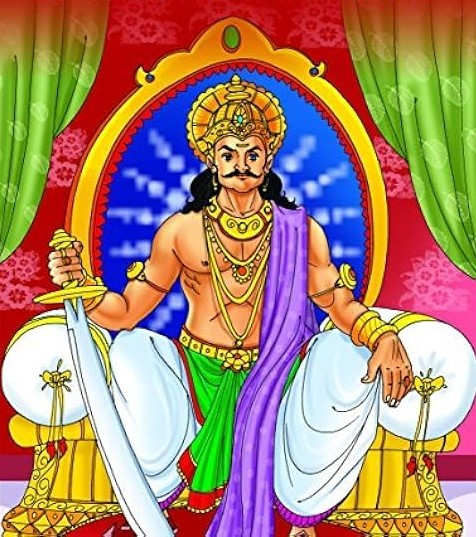

|
ત્યારે પ્રૌઢે કહ્યું, "હે રાજા! મિથાલાવતી નામની એક નગરી છે, જેનો રાજા હું? ગુણાધિપ હતો. ચિરમદેવ નામનો એક યુવાન રાજપીત દૂર દૂરથી તેમની સેવામાં પ્રવેશ કરવા આવ્યો હતો. તે દરરોજ તેમની સેવા કરવા જતો હતો. રાજા પાસે ગયા, પરંતુ ઇન્ટરવ્યુ ન લીધો. અને એક વર્ષ દરમિયાન તેણે (તેની સાથે) લાવેલા તમામ પૈસા તે રોજગાર વિના અહીં રહીને ખાઈ ગયા, અને ત્યાં (તેમની વતનમાં) તેનું ઘર બરબાદ થઈ ગયું. " |
|
|
એક દિવસ એવું બન્યું કે રાજા પીછો કરવા માટે તેના ઘોડા પર ચઢ્યો અને ચિરમદેવ પણ તેના અશ્વદળમાં જોડાયા. રાજા આકસ્મિક રીતે એક જંગલમાં તેના અનુયાયીઓથી અલગ થઈ ગયો, અને અનુયાયીઓ બીજા જંગલમાં ખોવાઈ ગયા; એક, જોકે, ચિરમદેવ, રાજાની પાછળ ચાલતો હતો. અંતે, તેણે બૂમ પાડી અને કહ્યું, 'મહારાજ ! જ્યારે હું તમારી સાથે છું, મારા ઘોડાને તમારી સાથે ગતિમાં રાખવા માટે બધા પરિચારકો પાછળ રહી ગયા છે.' આ સાંભળીને, રાજાએ તેના ઘોડા પર લગામ લગાવી, અને તેથી તે (રાજા પાસે) આવ્યો. રાજાએ તેની તરફ જોયું અને પૂછ્યું, 'તું આટલો ક્ષીણ કેવી રીતે થઈ ગયો?' પછી તેણે જવાબ આપ્યો, 'જો હું એવા માસ્ટર સાથે રહું છું કે તે હજારો લોકોને વહાલ કરે છે, જ્યારે તે મારા વિશે કોઈ વિચાર કરતો નથી, તેના માટે કોઈ દોષ (જોડતો નથી), પરંતુ મારા પોતાના ભાગ્યને દોષ આપવો જોઈએ. જેમ કે, ઉદાહરણ તરીકે, દિવસના પ્રકાશથી આખું વિશ્વ સ્પષ્ટપણે દેખાય છે; છતાં તે ઘુવડને દેખાતું નથી ;-આ માટે સૂર્યને શું દોષ આપી શકાય ? મને આશ્ચર્ય થાય છે કે જેણે નિર્વાહનું સાધન મારી માતાના ઉદરમાં મારા સુધી પહોંચાડ્યું, તેણે હવે જ્યારે હું જન્મ્યો છું, અને સાંસારિક આહારનો આનંદ માણવા સક્ષમ છું ત્યારે મારો વિચાર કરવો જોઈએ નહીં. મને ખબર નથી કે તે ઊંઘે છે કે મરી ગયો છે. અને, મારા મતે, ઘાતક ઝેર ગળીને મરી જવું વધુ સારું છે, જે કોઈ મહાન માણસ પાસેથી માલ અને પૈસા માંગે છે, જે તે આપતી વખતે, મોઢું રડી નાખે છે, અને તેનું નાક (તિરસ્કારમાં) ફેરવે છે, અને તેના ભમર ઉભા કરે છે. હવે આ છ બાબતો માણસને ધિક્કારપાત્ર બનાવે છે, - પ્રથમ, એક વિશ્વાસુ માણસની મિત્રતા; બીજું, કારણહીન હાસ્ય; ત્રીજું, સ્ત્રી સાથે ઝઘડો; ચોથું, ખરાબ માસ્ટરની સેવા કરવી; પાંચમું, ગધેડા પર સવારી; છઠ્ઠું, અસ્પષ્ટ (અથવા અયોગ્ય) ભાષણ.' અને નીચેની પાંચ બાબતો નિર્માતા તેના જન્મ સમયે માણસના ભાગ્યમાં નોંધે છે, - પ્રથમ, જીવનની લંબાઈ; બીજું, કૃત્યો; ત્રીજું, સંપત્તિ; ચોથું, જ્ઞાન; પાંચમું, પ્રતિષ્ઠા. રાજા જ્યાં સુધી માણસના ગુણો દેખાતા હોય ત્યાં સુધી બધા તેના સેવક બની રહે છે; પરંતુ જ્યારે તેના ગુણો ઘટે છે, ત્યારે તેના મિત્રો તેના દુશ્મન બની જાય છે. જો કે, આ એક વાત ચોક્કસ છે; સારા માસ્ટરની સેવા કરવાથી વહેલા કે પછી લાભ મળે છે; તે બિનઉપયોગી રહેતો નથી.' આ સાંભળીને રાજાએ આ બધા શબ્દો પર વિચાર કર્યો, પણ પછી કોઈ જવાબ ન આપ્યો. તેણે તેને આ કહ્યું, જોકે, 'મને ભૂખ લાગી છે; મને ક્યાંકથી ખાવા માટે કંઈક લાવો.' ચિરમદેવે કહ્યું, 'મહારાજ ! બ્રેડ" અહીં મેળવવાની નથી.' આટલું કહીને તે જંગલમાં ગયો, એક હરણને મારી નાખ્યું, ખિસ્સામાંથી ચકમક અને સ્ટીલ કાઢ્યું, આગ સળગાવી, માંસના ટુકડા ઉકાળ્યા, અને રાજાને પુષ્કળ ભોજન પીરસ્યું, અને પોતે તેમાંથી ભાગ લીધો. સંક્ષિપ્તમાં કહીએ તો, જ્યારે રાજા એકદમ સંતુષ્ટ થયો, ત્યારે તેણે કહ્યું, 'હવે, રાજપીત! મને શહેરમાં લઈ જાવ, કારણ કે માર્ગ મને જાણતો નથી' તે રાજાને શહેરમાં લઈ ગયો, અને તેને તેની પાસે લઈ આવ્યો. મહેલ. પછી રાજાએ તેને એક કાર્યાલયમાં નિયુક્ત કર્યો, અને તેને ઘણા ઝભ્ભો અને ઝવેરાત અર્પણ કર્યા. તે પછી, તે રાજાની નજીકથી હાજરી આપવાનું ચાલુ રાખ્યું. |
 |
| પેજ નંબર ૨૩ | ||